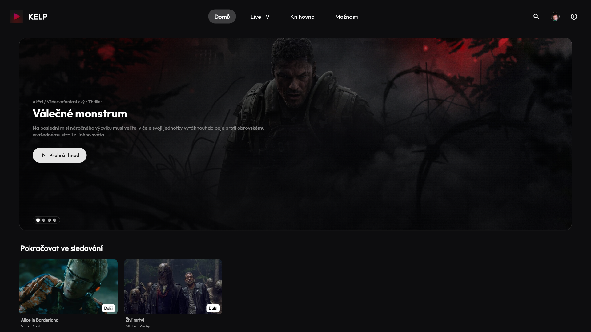
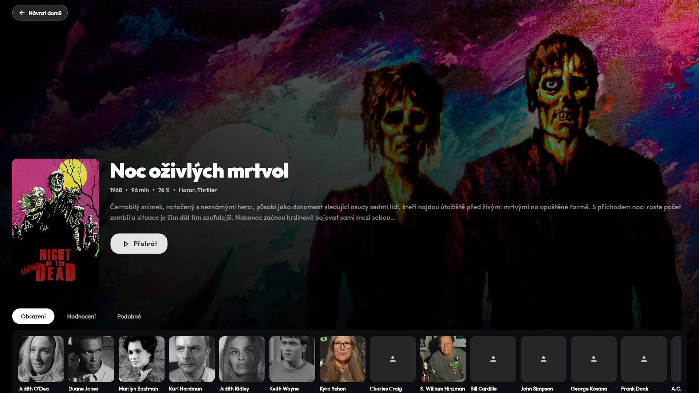
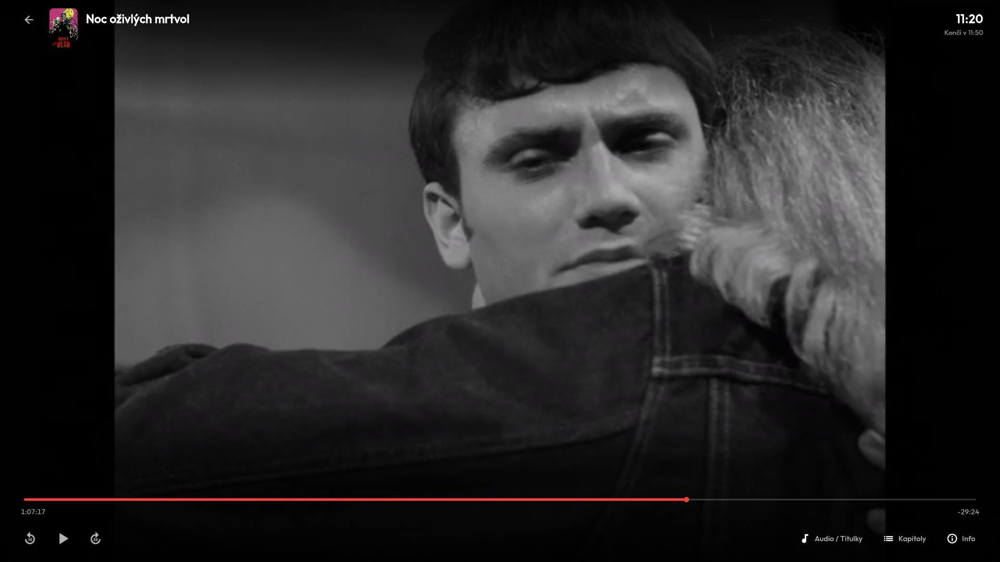
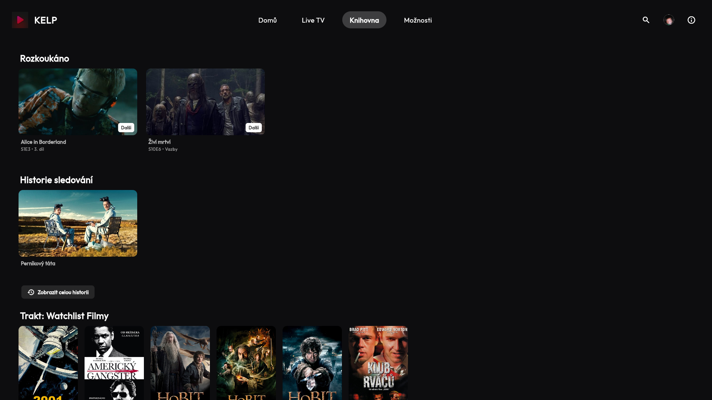
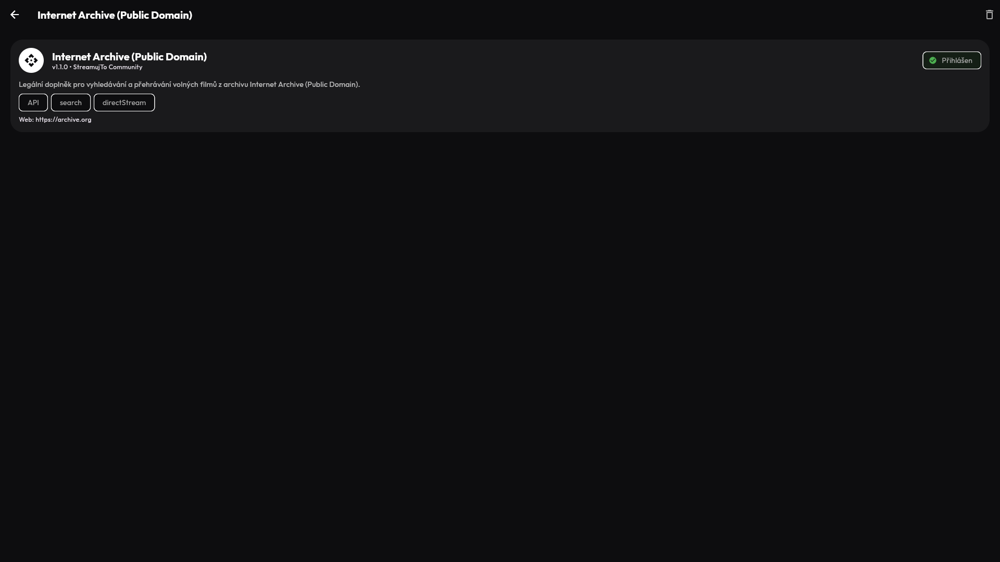
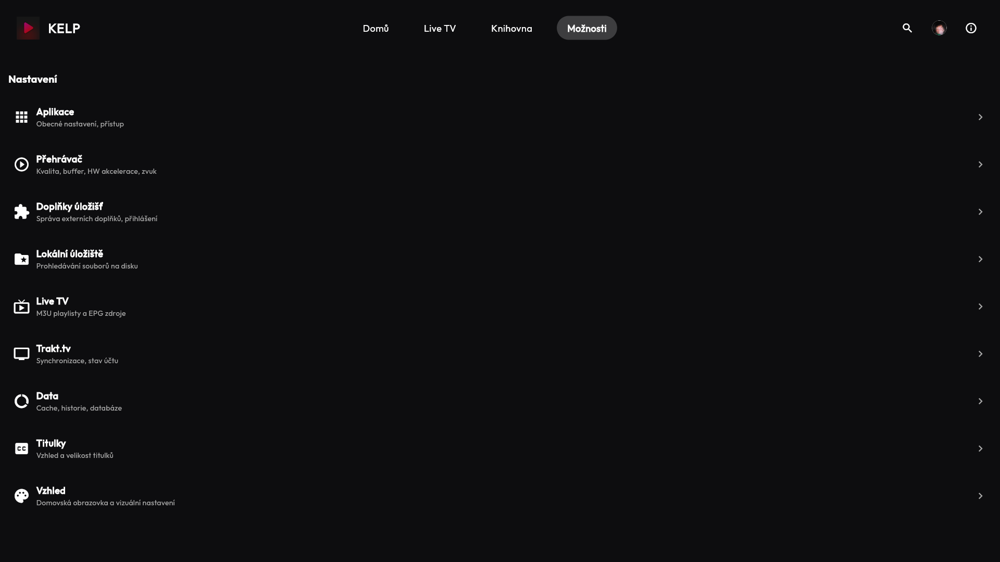
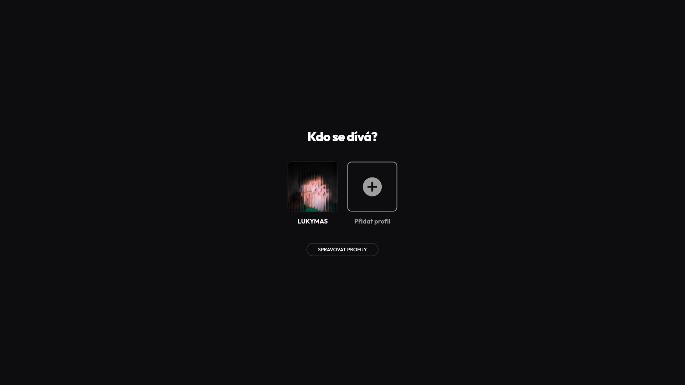

Kelp Entertains Lazy People. KELP je katalog filmů a seriálů, který vyhledá streamy na vašem úložišti — ať už lokálním, nebo přes doplněk — a rovnou je přehraje. Žádné zdlouhavé hledání, prostě jen sledujte.

Vyberte si film nebo seriál z katalogu → aplikace vyhledá dostupné streamy na vašem úložišti → klikněte a sledujte. Tak jednoduché to je.
Procházejte tisíce titulů s plakáty, hodnocením a popisky. Katalog čerpá z TMDb a Trakt.tv a je vždy aktuální.
Ke zvolenému titulu aplikace automaticky prohledá vaše úložiště — lokální složku nebo připojený doplněk — a najde dostupné streamy.
Nalezený stream rovnou přehrajete v aplikaci. Podpora titulků, změna rychlosti, skip intro — vše na jednom místě.
Připojte vlastní úložiště přes JSON doplňky. Komunita tvoří nové addony a vy si jen vyberete, které chcete používat.
Máte filmy na disku? Přidejte lokální složku a KELP je zařadí do katalogu a přehraje jako každý jiný stream.
Každý člen rodiny má vlastní profil s vlastní historií sledování, seznamem oblíbených a pokračováním v přehrávání.
Přeneste film z mobilu nebo počítače přímo na televizi. Stačí vybrat Chromecast zařízení a sledovat.
Jedna aplikace na všech vašich zařízeních. Synchronizujte pokrok přes Trakt.tv a pokračujte odkudkoli.
Automaticky ukažte přátelům na Discordu, jaký film nebo seriál právě sledujete.






Posunutím do stran zobrazíte další snímky
Sledujte novinky, diskutujte o funkcích a získejte podporu na našem Discord serveru.